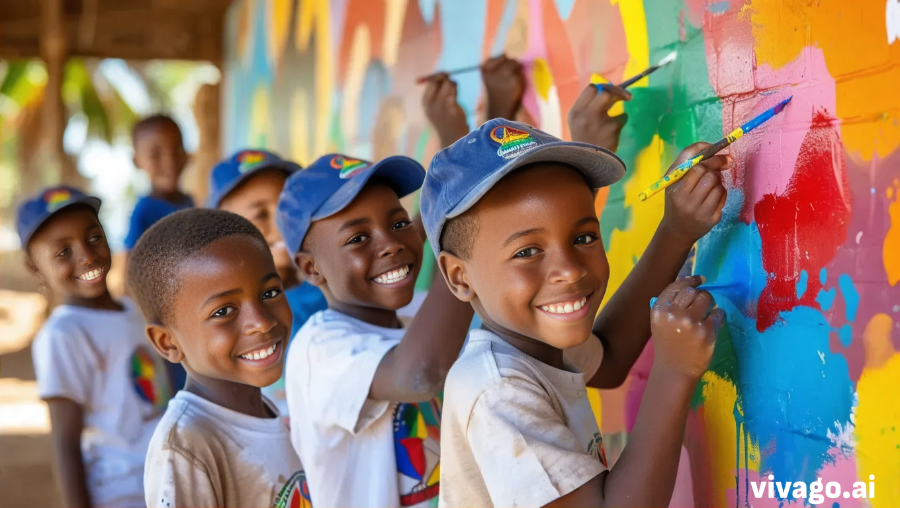
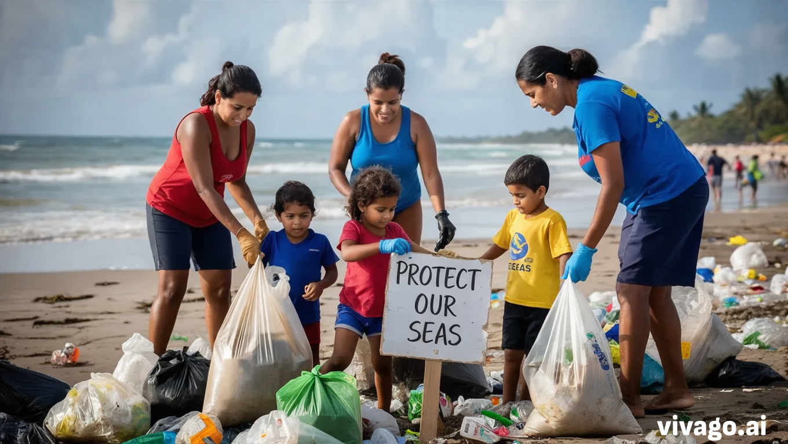
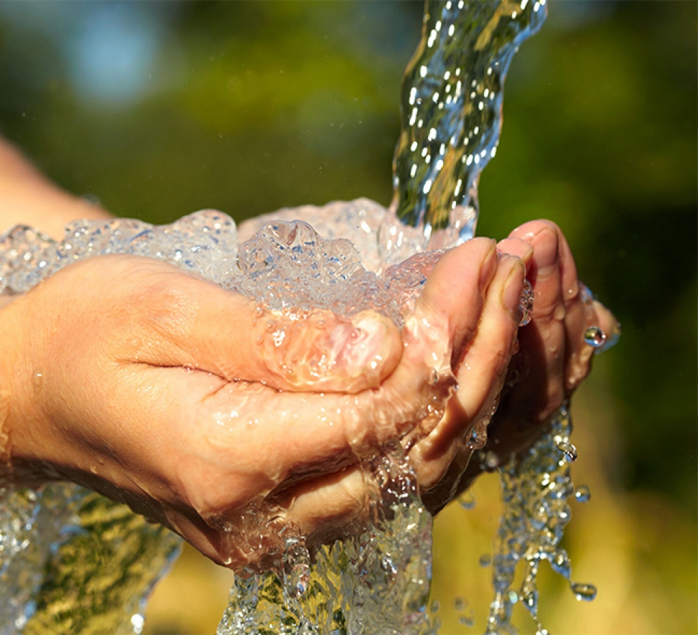

Misión y Visión
Mision: Nuestra misión es promover el desarrollo sostenible y el bienestar social en las comunidades venezolanas, enfocándonos en programas educativos, de salud y medioambientales que empoderen a los ciudadanos. Creemos en la importancia de crear oportunidades para el crecimiento personal y comunitario, abriendo puertas al aprendizaje y al acceso a servicios básicos.
Visión: SAspiramos a ser una fundación líder en Venezuela, reconocida por su habilidad para transformar vidas y fomentar el progreso comunitario. Nuestra visión es un país donde cada individuo tenga acceso a la educación y atención médica de calidad, y donde las comunidades sean autosuficientes y resilientes frente a los desafíos.
Historias de impacto
Ana María Hernández: Gracias al programa de becas de nuestra fundación, Ana María pudo completar su educación secundaria y ahora estudia ingeniería en la universidad. Su historia es un testimonio del poder transformador de la educación y su sueño es regresar a su comunidad para implementar proyectos de energía renovable.
Proyecto Agua Limpia: En la comunidad de San Rafael, hemos instalado sistemas de filtración que han reducido las enfermedades transmitidas por el agua en un 70%. Este proyecto ha involucrado a la comunidad local en el mantenimiento y operación de los sistemas, creando empleo y promoviendo la autosuficiencia.